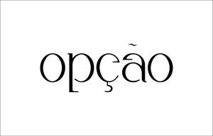

Trade Mark Journal No.2025/031 1 August 2025
UK00004204253 15 May 2025 (3,35)

- Class 3
- Soaps; perfumery, essential oils, body lotions, body oils, body washes; cosmetics, hair lotions; perfumes; fragrances; after shaves; milks [cosmetics]; hand milks, body milks, beauty milks, after-sun milks [cosmetics], tanning milks [cosmetics], moisturizing milk, cleansing milks for skin care, aftershave milk, bath milk; scented oils, perfume oils, essential oils, massage oils, oils for the skin, cuticle oils, massage oils hair oils, shaving oils, body oils, bath oils, facial oils, non-medicated oils, sun-tanning oils, shower oils, suntan oils [cosmetics], mineral oils [cosmetic], after-sun oils [cosmetics], cosmetics in the form of oils, tanning oils [cosmetics]; body and facia butters; balms [non-medicated]; suntan creams [self-tanning creams], moisturising creams, cosmetic creams, skin creams, exfoliating creams, sun-tanning creams, shaving creams, creams (cosmetic -), after-shave creams non-medicated creams, pre-shave creams, facial creams, perfumed creams, bath creams, hair creams, cleansing creams, beauty creams, skin creams [non-medicated], washing creams, hand creams, eye creams, cosmetic massage creams, cold creams, shower creams, fluid creams [cosmetics], conditioning creams, body creams, non-medicated cleansing creams, beauty balm creams, day creams, blemish balm creams, night creams, make-up removing creams, skin care creams [cosmetic]; hair gel, shave gel, tooth gel, nail gel, bath and shower gels, not for medical purposes, massage gels other than for medical purposes, gel scrub, cosmetics in the form of gels, moisturising gels [cosmetic], foaming bath gels, facial gels [cosmetics], aftershave gels, soapy gels, cleansing gels, styling gels, sun-tanning gels, body gels, hand gels, soaps in gel form; Talcum powders, soap powders, perfumed powders, hand powders, cosmetics in the form of powders, face powders, bath powders (non-medicated); anti perspirants; deodorants for personal use; preparations for the care of the skin, scalp and the body; sun tanning preparations; preparations for use in the bath and shower; face and body preparations namely lotions, creams, moisturisers, cleansers, serums, butter, balms, scrubs, masks, toners, mists; hair care and hair styling preparations namely shampoos, conditioners, styling products, finishing spray and gels; sunscreen oils and lotions.
- Class 35
- Retail services in respect of soaps, perfumery, essential oils, body lotions, body oils, body washes, cosmetics, hair lotions, perfumes, fragrances, after shaves, milks, oils, butters, balms, creams, gels, powders and lotions, anti perspirants, deodorants for personal use, preparations for the care of the skin, scalp and the body, sun tanning preparations, preparations for use in the bath and shower, face and body preparations namely lotions, creams, moisturisers, cleansers, serums, butter, balms, scrubs, masks, toners, mists, hair care and hair styling preparations namely shampoos, conditioners, styling products, finishing spray and gels, sunscreen oils and lotions.
OPCAO LTD
Representative: Freeths LLP